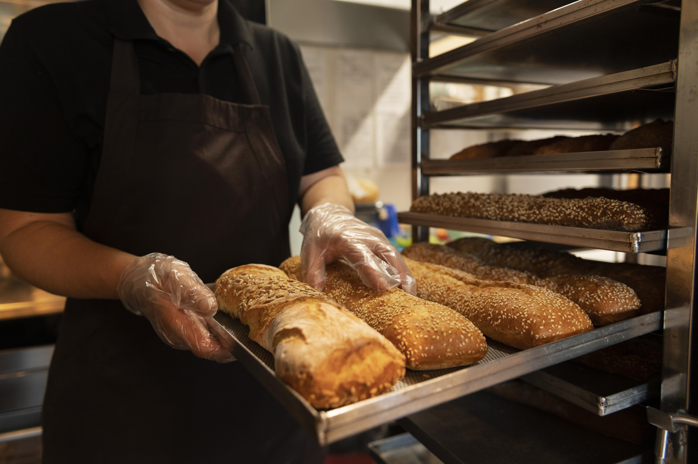
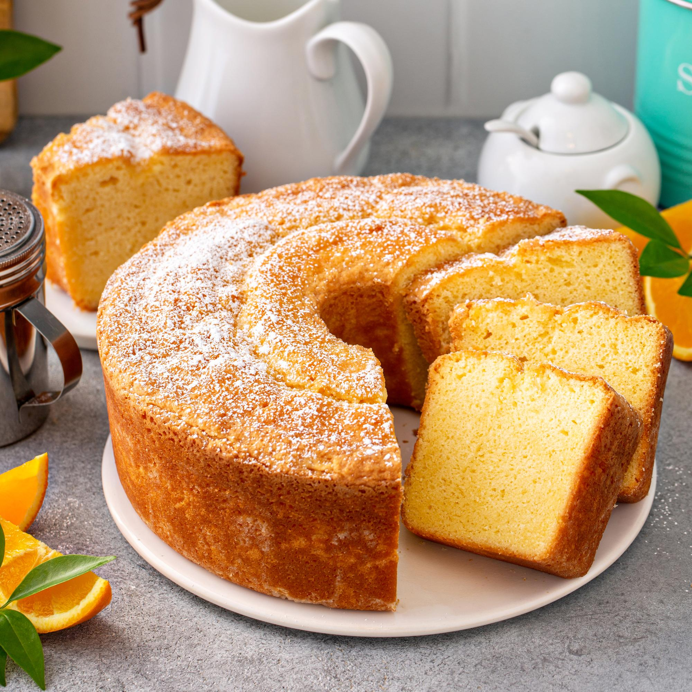
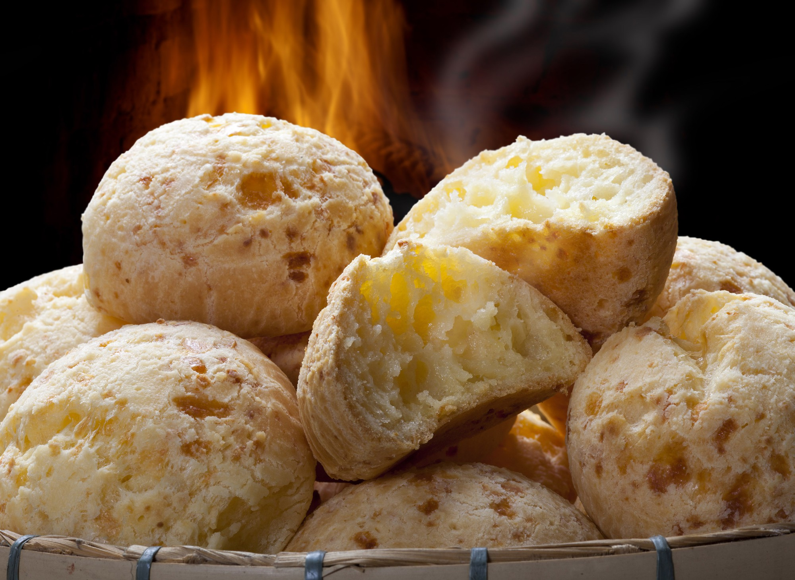
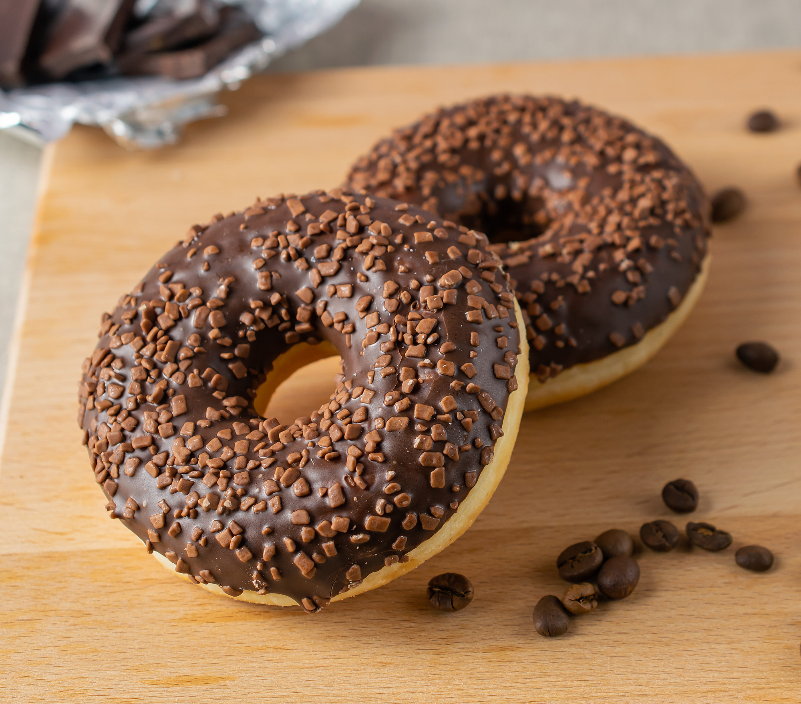
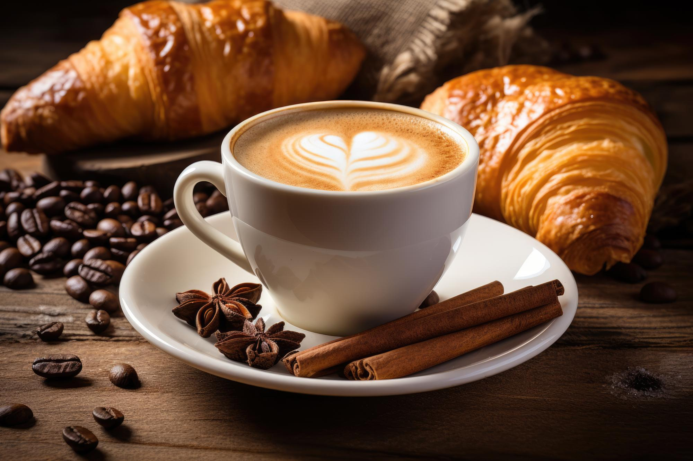
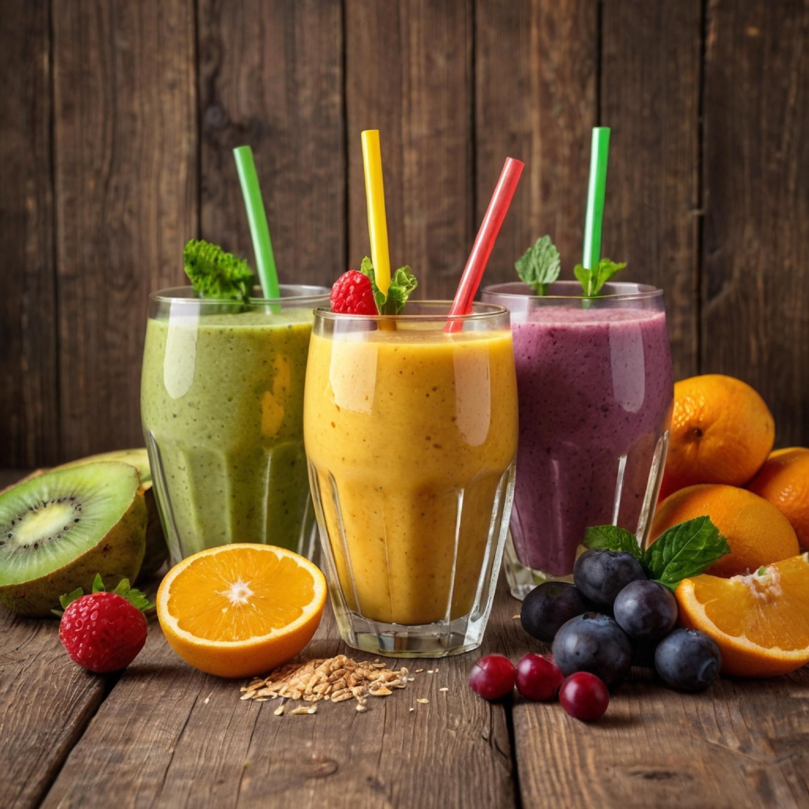
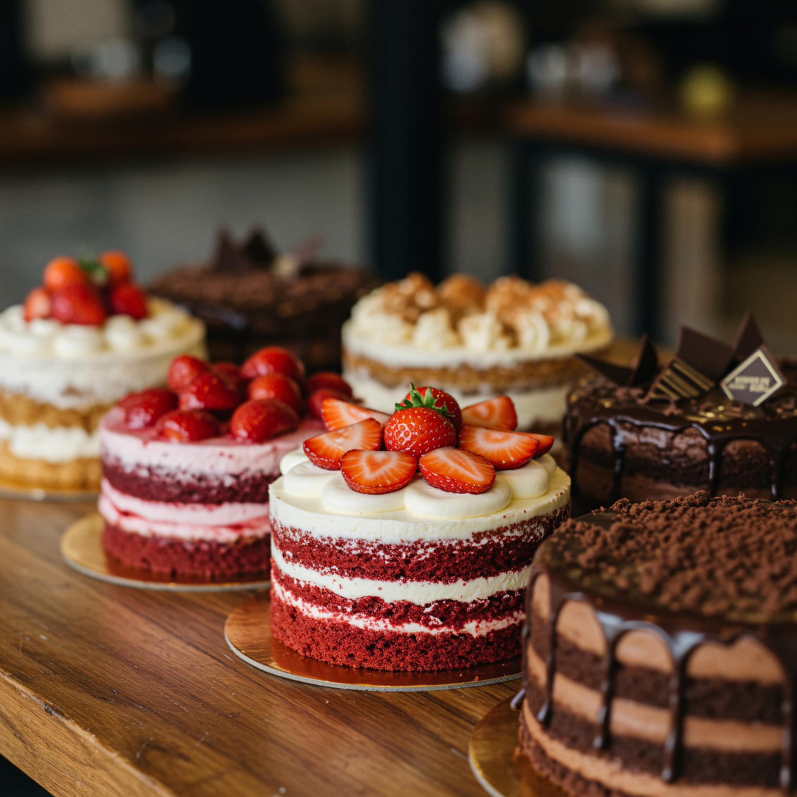
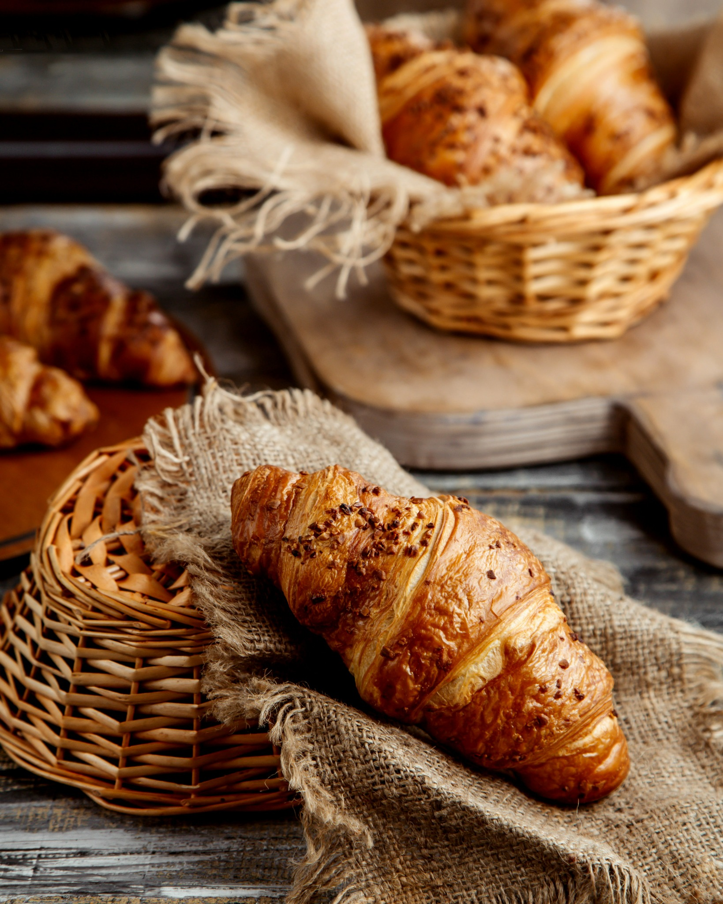
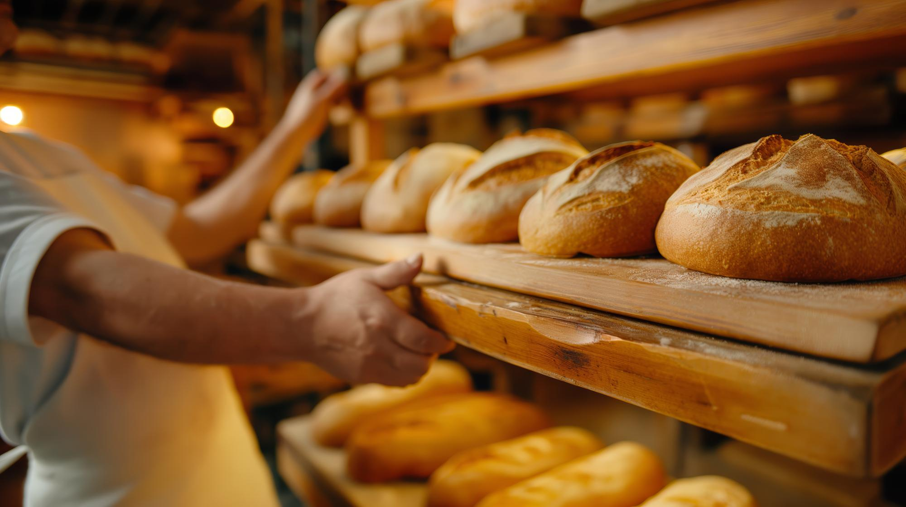

CAFÉ
Café cremoso
Para começar bem o dia ou acompanhar uma boa conversa.
Bolo caseiro, pão de queijo quentinho, pão saindo do forno e café passado na hora. Um cantinho simples para tomar um café com calma.

A Doce Café nasceu com uma ideia simples: oferecer aquele café gostoso de padaria, com receitas que lembram casa e produtos preparados para o dia a dia.
Aqui você pode passar rapidinho para pegar um pão de queijo ou sentar um pouco, pedir um café e escolher alguma coisa da vitrine.
Uma seleção demonstrativa para mostrar um pouco do que você encontra por aqui.

Para começar bem o dia ou acompanhar uma boa conversa.
Fatia macia e sabor de receita feita em casa.

Quentinho, dourado e perfeito com café.

Para quem não dispensa uma coisinha doce.

Uma opção leve e refrescante para qualquer hora.

Aquele cheiro de pão assando que faz a gente querer levar um de cada. A proposta da Doce Café é justamente essa: comida simples, fresquinha e feita para dar vontade.
Venha conhecer →


Os dados abaixo são ilustrativos e podem ser trocados pelos dados reais do cliente.
Chamar no WhatsApp